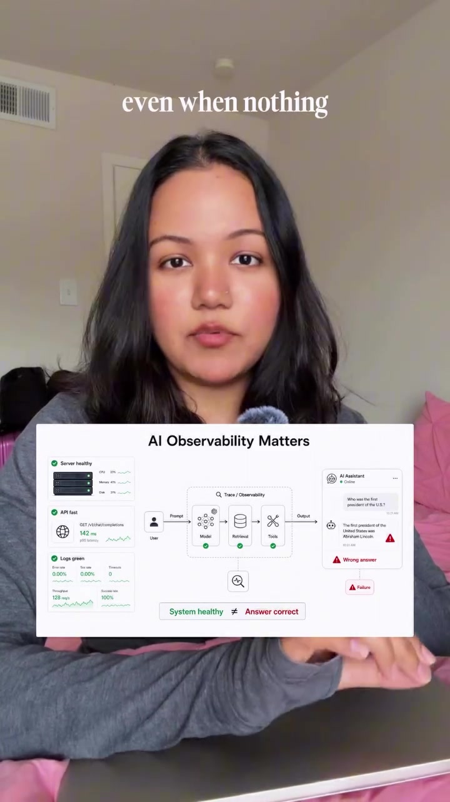
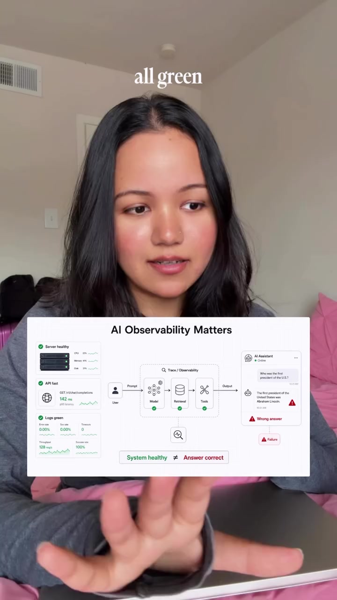
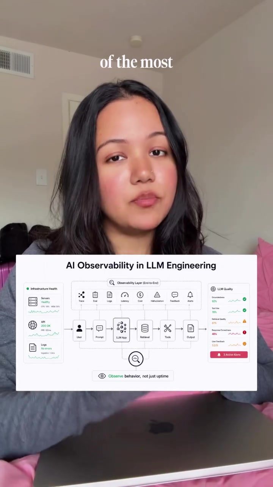
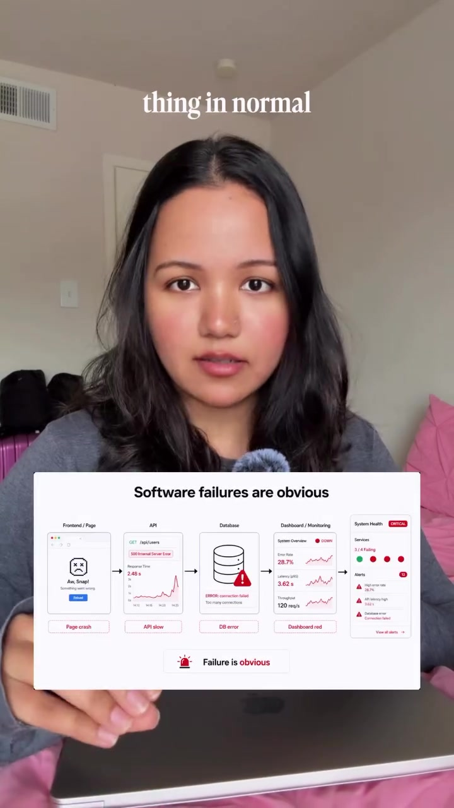

AI · System-Architecture
Production AI Observability: The 8-Step LLM Evaluation & Trace Lifecycle
AI applications fail silently. Traditional application performance monitoring (APM) shows green health checks, 200 OK statuses, and sub-second latencies while an LLM hallucination is actively giving illegal or harmful advice to an end user. Production AI observability requires instrumenting full granular request journeys into discrete spans (Intent routing, Retrieval, Re-ranking, Context synthesis, Tool execution), automated semantic scoring, and systematic "Bad Answers" feedback loops.
Video Visual Stills




The 8-Step Production LLM Observability Architecture
Capture the Request Metadata
Log the user question, session ID, tenant ID, UTC timestamp, exact model version (e.g. gpt-4o-2024-08-06), prompt hash/version, temperature, top_p, and environment (staging vs production).
Trace the Pipeline (Spans into Traces)
Deconstruct every single AI invocation into ordered OpenTelemetry spans:
Store Grounding Context (RAG State)
Persist which documents were retrieved, exact chunk text, chunk IDs, cosine similarity distances, and source document versions to diagnose retrieval failures.
Track Critical System & Financial Metrics
Monitor end-to-end latency, Time-To-First-Token (TTFT), prompt tokens vs completion tokens, model cost per query, retry counts, and tool schema execution failures.
Score Answer Quality (LLM-as-a-Judge)
Run automated evaluators against sample traffic:
- Faithfulness / Groundedness: Is every claim derived directly from retrieved chunks?
- Answer Relevance: Did the model answer the user's specific intent?
- Hallucination Detection: Did the model fabricate dates, prices, or policies?
- User Sentiment: Explicit thumbs-up / thumbs-down and retry patterns.
Automated Anomaly Flagging Rules
Trigger alerts when: zero context retrieved but answer asserts firm policy; model answer contradicts retrieved document text; token cost spikes 300% above median; or a newly deployed prompt template increases user negative feedback.
The "Bad Answers" Review Dashboard
A dedicated interface for engineering and product teams displaying failed queries, complete retrieved chunks, prompt versions, latency, cost, and human audit notes.
The Continuous Optimization Loop
Trace → Score → Flag → Debug → Fix (Chunk size, prompt system message, model choice, or vector index) → Run regression eval test suite.